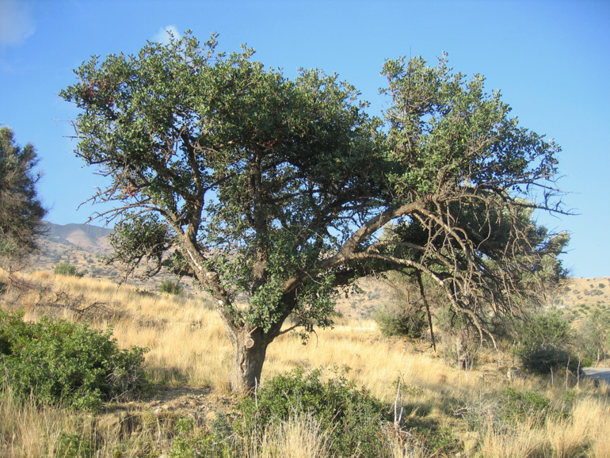
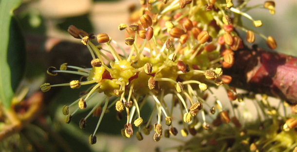
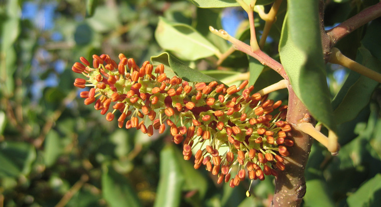
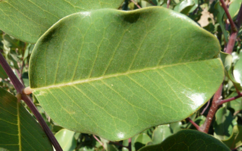
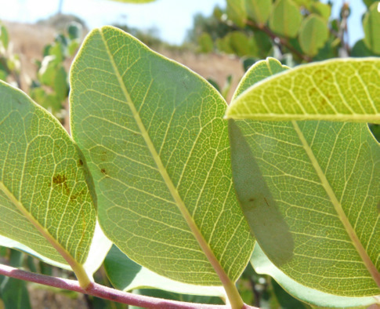
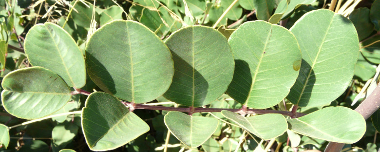
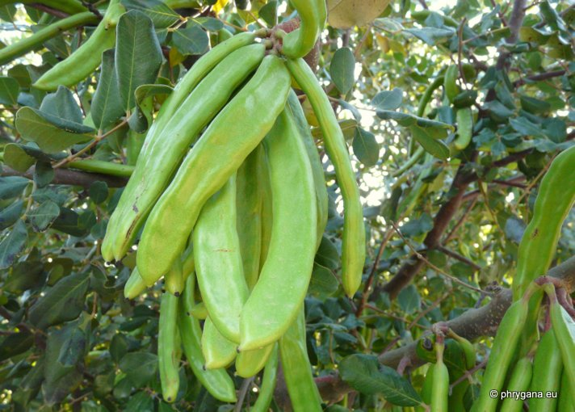

| PHRYGANA | Fauna | Flora | Galles | liste des espèces |
contact -
info - commentaires phrygana1 (at) gmail.com |
| Particularités crétoises | nouveautés | Mines | ressources naturelles |
| Ceratonia siliqua L. |
| 8 | Flora | FABACEAE | Cassieae | Ceratonia L. |
 Ceratonia siliqua Melambes (Agios Giorgos) 25 octobre 2006 |
| en: Carob tree -- fr: le Caroubier | |
| Feuilles: composées-paripennées (8-10 folioles). Les folioles sont glabres, coriaces, ovales-arrondies, vert luisant sur la face supérieure, vert franc sur la face inférieure | |
| Tiges: les jeunes tiges ont une couleur lie-de-vin clair et sont glabres. | |
| Fleurs: petites, vert pâle à vert rougeâtre, sans pétales, à 5 sépales, parfois hermaphrodites, parfois sexuées, groupées en un racème sur le tronc et les branches. | |
| Anthères: rouge orangé. Filet vert jaunâtre très clair. | |
| Fruit: une gousse longue de 10 - 30 cm, un peu aplatie , pendante, brun violet, contenant des graines plates. | |
| Hauteur: 1 - 10 m | Type biologique: mésophanérophyte sempervirent |
| Floraison: septembre octobre novembre décembre | |
| Altitudes: 0 - 780 m | |
| Statut en Crète: indigène -- cultivé | |
| Biotopes en Crète: olivaies, garrigue, broussailles, également planté pour ses fruits. | |
| Distribution: région Méditerranéenne | |
| Note: Les gousses de Ceratonia siliqua donnent un fourrage apprécié. Les graines fournissent une farine au goût chocolaté, employée pour des pâtisseries; l'enveloppe des graines fournit une gélatine appréciée en confiserie | |
| Note: la graine du Caroubier a été utilisée dans l'Antiquité comme unité de mesure et a donné son nom au "carat". | |
| Plante-hôte pour: | ||
|
|
||
| Prinobius myardi | ||
|
 Ceratonia siliqua Melambes (Agios Giorgos) 25 octobre 2006 |
|
 Ceratonia siliqua Melambes (Agios Giorgos) 25 octobre 2006 |
  Ceratonia siliqua Melambes (Agios Giorgos) 03 août 2009 Ceratonia siliqua Melambes (Agios Giorgos) 11 août 2009 |
|
 Ceratonia siliqua Melambes (Agios Giorgos) 11 août 2009 |
|
 Ceratonia siliqua Melambes (Agios Giorgos) 03 mai 2012 |
| 01 décembre 2012 |
| © paul fontaine -- © Phrygana.eu 2007 -- 2013 |